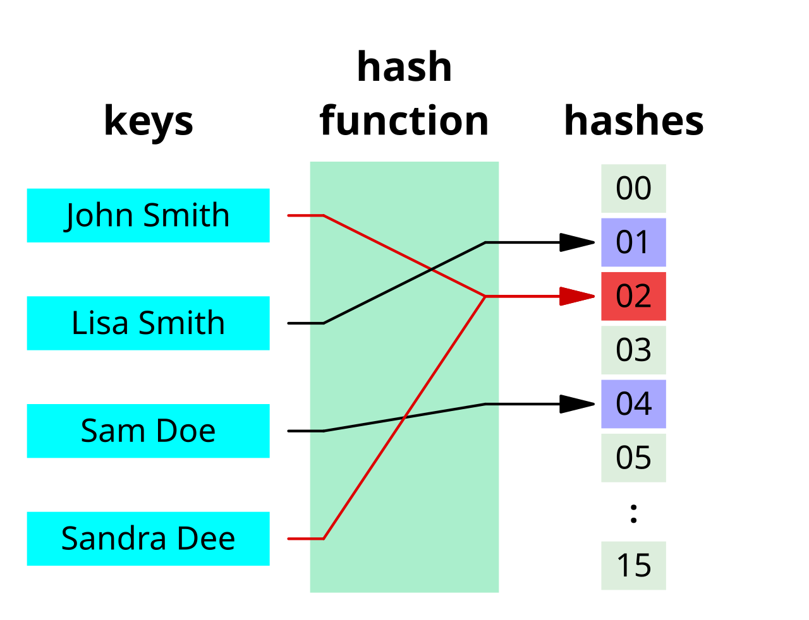

DI Reinhold Buchinger
Creative Commons-Lizenz CC BY-NC-SA 4.0 AT.
hashCode() und equals() sind in der Klasse Object definiert, von der jede Klasse in Java automatisch erbt.Hashwerte werden angewendet für Prüfsummen, in der Kryptologie (Nachrichten signieren, Passwörter speichern), Daten effizient in großen Datenmengen zu suchen (mittels Hashtabellen)

Quelle: https://de.wikipedia.org/wiki/Hashfunktion#/media/Datei:Hash_table_4_1_1_0_0_1_0_LL.svg
ObjectObjects1 == s2 ⇒ testet Identität (dasselbe Objekt)s1.equals(s2) ⇒ testet inhaltliche Gleichheit== und .equals() das selbe ErgebnisWenn equals() überschrieben wird muss auch hashCode() überschrieben werden!
Wenn equals() true liefert, müssen auch die Hashwerte der beiden Objekte gleich sein!
public class Student {
private String firstName;
private String lastName;
private int gradeLevel;
private int id;
@Override
public boolean equals(Object o) {
if (o == null || getClass() != o.getClass()) {
return false; }
Student student = (Student) o;
return id == student.id;
}
@Override
public int hashCode() {
return Objects.hashCode(id);
}
}
Mit Überschreiben von equals():
Student s1 = new Student("Max", "Mustermann", 3, 123);
Student s2 = new Student("Max", "Mustermann", 3, 123);
Student s3 = new Student("Max", "Mustermann", 3, 456);
System.out.println(s1.equals(s2)); //true
System.out.println(s1.equals(s3)); //false
Ohne Überschreiben von equals():
Student s1 = new Student("Max", "Mustermann", 3, 123);
Student s2 = new Student("Max", "Mustermann", 3, 123);
Student s3 = new Student("Max", "Mustermann", 3, 456);
System.out.println(s1 == s2); //false
System.out.println(s1 == s3); //falsehashCode() und equals(), um Duplikate zu erkennen.hashCode() aufgerufen. Sind die Hashwerte gleich (mögliche Kollision), wird equals() aufgerufen.hashCode() und equals() true liefern, handelt es sich um ein Duplikat und das Objekt wird nicht hinzugefügt.Comparator (vergleicht zwei Objekte)Comparable (vergleicht anderes Objekt mit sich selbst)Comparable (z.B. String, Integer,...) | Comparable<T> | Comparator<T> |
|---|---|
int compareTo(T el); |
int compare(T el1, T el2); |
Vergleicht this mit dem Parameter el |
Vergleicht el1 mit el2 |
Rückgabewert:
Viele Klassen (Integer, String,...) implementieren das Comparable Interface. Du kannst das bei der Implementierung für deine eigenen Klassen nutzen!
String s1 = "Hallo";
String s2 = "Welt";
//negativer Wert, da "Hallo" lexikographisch kleiner als "Welt" ist
int compareValue = s1.compareTo(s2);
Integer i1 = 15;
Integer i2 = 10;
//positiver Wert, da 15 größer als 10 ist
compareValue = i1.compareTo(i2);
Implementiert eine Klasse das Comparable Interface, so definiert sie eine natürliche Ordnung für ihre Objekte (i.e. eine "Standard Sortierung").
public class Student implements Comparable<Student> {
//Attribute, Konstruktor, Getter, Setter usw.
@Override
public int compareTo(Student other) {
//Vergleichslogik, z.B. nach Nachnamen, dann Vornamen
int lastNameComparison = this.lastName.compareTo(other.lastName);
if (lastNameComparison != 0) {
return lastNameComparison; //Nachnamen sind unterschiedlich
}
//Nachnamen sind gleich, also nach Vornamen vergleichen
return this.firstName.compareTo(other.firstName);
}
}
Comparator Interface kann eine externe Sortierlogik definiert werden (außerhalb der Klasse, die sortiert werden soll).
public class StudentGradeComparator implements Comparator<Student> {
@Override
public int compare(Student s1, Student s2) {
return Integer.compare(s1.getGradeLevel(), s2.getGradeLevel());
}
}
Mit sort() kann eine Liste sortiert werden.
List<Student> students = new ArrayList<>(List.of(s1, s2, s3));
//Sortiert die Liste nach der natürlichen Ordnung (compareTo() Methode)
students.sort(null);
//Sortiert die Liste nach der Logik des StudentGradeComparator
students.sort(new StudentGradeComparator());
TreeSet ist ein sortiertes Set, das die natürliche Ordnung der Elemente oder einen angegebenen Comparator verwendet.equals() und hashCode()).
//Verwendet die natürliche Ordnung (compareTo() Methode)
Set<Student> studentTreeSet = new TreeSet<>();
//Verwendet die Logik des StudentGradeComparator
Set<Student> studentTreeSetWithComparator = new TreeSet<>(new StudentGradeComparator());
Arrays.sort() ermöglicht die Sortierng von klassischen Arrays.
Student[] studentArray = {s1, s2, s3};
//Sortiert das Array nach der natürlichen Ordnung (compareTo() Methode)
Arrays.sort(studentArray);
//Sortiert das Array absteigend nach der natürlichen Ordnung (compareTo() Methode)
Arrays.sort(studentArray, Collections.reverseOrder());
//Sortiert das Array nach der Logik des StudentGradeComparator
Arrays.sort(studentArray, new StudentGradeComparator());
List<Student> students = new ArrayList<>(List.of(s1, s2, s3));
//Sortiert die Liste nach der Logik des StudentGradeComparator mit einem Lambda-Ausdruck
students.sort((s1, s2) -> Integer.compare(s1.getGradeLevel(), s2.getGradeLevel()));
//Sortiert die Liste nach der Logik des StudentGradeComparator mit einer Method Reference
students.sort(Comparator.comparingInt(Student::getGradeLevel));